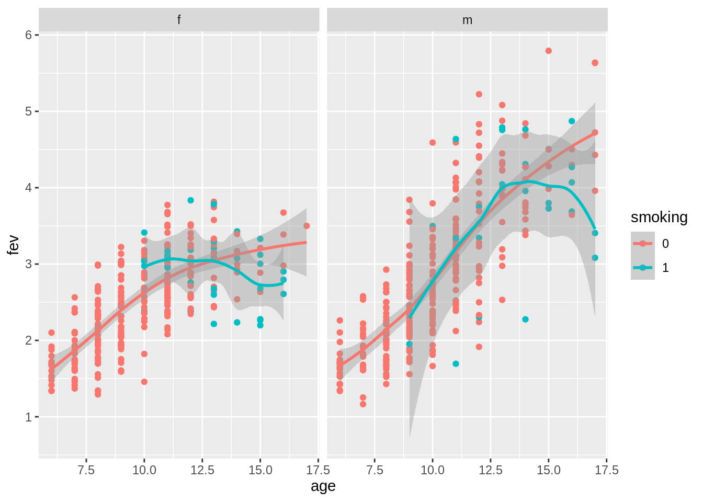

In this tutorial, you will learn how to import, tidy, wrangle and visualize data yourself!
The FEV dataset
The FEV, which is an acronym for forced expiratory volume, is a measure of how much air a person can exhale (in liters) during a forced breath. In this dataset, the FEV of 606 children, between the ages of 6 and 17, were measured. The dataset also provides additional information on these children: their age, their height, their gender and, most importantly, whether the child is a smoker or a non-smoker.
The goal of this experiment was to find out whether or not smoking has an effect on the FEV of children.
Note: to analyse this dataset properly, we will need some relatively advanced modeling techniques. At the end of this week, you will have seen all three required steps to analyse such a dataset! For now, we will limit ourselves to exploring the data.
Load libraries
If you do not have these libraries installed, make sure to install them first by using the install.packages() function with missing the package name inside the parentheses (and using quotation marks, like install.packages("car"))
library(readr)
library(dplyr)
library(tidyverse)
library(ggplot2)
library(car)
Import the data
Note: fev.txt is a tab-separated file: make sure to select the correct readr function!
fev <- read_tsv("https://raw.githubusercontent.com/statOmics/PSLS21/data/fev.txt")
## Rows: 606 Columns: 5
## ── Column specification ────────────────────────────────────────────────────────
## Delimiter: "\t"
## chr (1): gender
## dbl (4): age, fev, height, smoking
##
## ℹ Use `spec()` to retrieve the full column specification for this data.
## ℹ Specify the column types or set `show_col_types = FALSE` to quiet this message.
Data wrangling
There are a few things in the formatting of the data that can be improved:
Both gender and smoking can be transformed to factors.
The height variable is written in inches. Assuming that this audience is mainly Portuguese/Belgian, inches are hard to interpret. Let’s add a new column, height_cm, with the values converted to centimeters.
fev <- fev %>%
mutate(gender = as.factor(gender)) %>%
mutate(smoking = as.factor(smoking)) %>%
mutate(height_cm = height * 2.54)
head(fev)
That’s better!
Data exploration
Now, let’s make a first explorative plot, showing only the FEV for both smoking categories.
Which type of plot do you suggest?
fev %>%
ggplot(aes(x = smoking, y = fev, fill = smoking)) +
scale_fill_manual(values = c("dimgrey", "firebrick")) +
theme_bw() +
geom_boxplot(outlier.shape = NA) +
geom_jitter(width = 0.2, size = 0.1) +
ggtitle("Boxplot of FEV versus smoking") +
ylab("FEV (l)") +
xlab("smoking status")

Did you expect these results?
It appears that children that smoke have a higher median FEV than children that do not smoke. Should we change legislation worldwide and make smoking obligatory for children?
Maybe there is something else going on in the data. Now, we will generate a similar plot, but we will stratify the data based on age (age as factor).
fev %>%
ggplot(aes(x = as.factor(age), y = fev, fill = smoking)) +
geom_boxplot(outlier.shape = NA) +
geom_point(width = 0.2, size = 0.1, position = position_jitterdodge()) +
theme_bw() +
scale_fill_manual(values = c("dimgrey", "firebrick")) +
ggtitle("Boxplot of FEV by smoking status, stratified on age") +
ylab("FEV (l)") +
xlab("Age")
## Warning: Ignoring unknown parameters: width

This plot seems to already be much more plausible. First, it seems that we do not have any smoking children of ages 6, 7 or 8. Second, when looking at the results per age “category”, it seems no longer the case that smokers have a much higher FEV than non-smokers; for the higher ages, the contrary seems true.
This shows that taking into account important confounders (in this case) is crucial! If we simply analysed based on the smoking status and FEV values only, we probably would’ve obtained completely incorrect results.
Can we provide an even better visualization of the data, taking into account more useful explanatory variables with respect to the FEV?
fev %>%
ggplot(aes(x = as.factor(age), y = fev, fill = smoking)) +
geom_boxplot(outlier.shape = NA) +
geom_point(width = 0.2, size = 0.1, position = position_jitterdodge()) +
theme_bw() +
scale_fill_manual(values = c("dimgrey", "firebrick")) +
ggtitle("Boxplot of FEV by smoking status, stratified on age and gender") +
ylab("FEV (l)") +
xlab("Age") +
facet_grid(rows = vars(gender))
## Warning: Ignoring unknown parameters: width

This plot holds one extra level of information, the gender of the child. Especially for higher ages, the median FEV is higher for males as compared to females.
The only source of information that is lacking is height. To look at the effect of height, we could simply make a scatterplot displaying the FEV in function of a child’s height (in cm). Additionally, we could color the dots based on gender.
fev %>%
ggplot(aes(x = height_cm, y = fev, color = gender)) +
geom_point() +
scale_color_manual(values = c("darkorchid", "olivedrab4")) +
theme_bw() +
ggtitle("Boxplot of FEV versus height") +
ylab("FEV (l)") +
xlab("Height (cm)")

There is a clear relationship between height and FEV. In addition, we see that for the large height values (>175cm), we mainly find male subjects.
LS0tCnRpdGxlOiAiRXhlcmNpc2UgNC40OiBFeHBsb3JpbmcgdGhlIEZFViBkYXRhc2V0IC0gc29sdXRpb24iCmF1dGhvcjogIkxpZXZlbiBDbGVtZW50LCBKZXJvZW4gR2lsaXMgYW5kIE1pbGFuIE1hbGZhaXQiCmRhdGU6ICJzdGF0T21pY3MsIEdoZW50IFVuaXZlcnNpdHkgKGh0dHBzOi8vc3RhdG9taWNzLmdpdGh1Yi5pbykiCi0tLQoKSW4gdGhpcyB0dXRvcmlhbCwgeW91IHdpbGwgbGVhcm4gaG93IHRvIGltcG9ydCwgdGlkeSwgd3JhbmdsZSBhbmQKdmlzdWFsaXplIGRhdGEgeW91cnNlbGYhCgojIFRoZSBGRVYgZGF0YXNldAoKVGhlIEZFViwgd2hpY2ggaXMgYW4gYWNyb255bSBmb3IgYGZvcmNlZCBleHBpcmF0b3J5IHZvbHVtZWAsCmlzIGEgbWVhc3VyZSBvZiBob3cgbXVjaCBhaXIgYSBwZXJzb24gY2FuIGV4aGFsZSAoaW4gbGl0ZXJzKQpkdXJpbmcgIGEgZm9yY2VkIGJyZWF0aC4gSW4gdGhpcyBkYXRhc2V0LCB0aGUgRkVWIG9mIDYwNiBjaGlsZHJlbiwKYmV0d2VlbiB0aGUgYWdlcyBvZiA2IGFuZCAxNywgd2VyZSBtZWFzdXJlZC4gVGhlIGRhdGFzZXQKYWxzbyBwcm92aWRlcyBhZGRpdGlvbmFsIGluZm9ybWF0aW9uIG9uIHRoZXNlIGNoaWxkcmVuOgp0aGVpciBgYWdlYCwgdGhlaXIgYGhlaWdodGAsIHRoZWlyIGBnZW5kZXJgIGFuZCwgbW9zdAppbXBvcnRhbnRseSwgd2hldGhlciB0aGUgY2hpbGQgaXMgYSBzbW9rZXIgb3IgYSBub24tc21va2VyLgoKVGhlIGdvYWwgb2YgdGhpcyBleHBlcmltZW50IHdhcyB0byBmaW5kIG91dCB3aGV0aGVyIG9yIG5vdApzbW9raW5nIGhhcyBhbiBlZmZlY3Qgb24gdGhlIEZFViBvZiBjaGlsZHJlbi4KCk5vdGU6IHRvIGFuYWx5c2UgdGhpcyBkYXRhc2V0IHByb3Blcmx5LCB3ZSB3aWxsIG5lZWQgc29tZQpyZWxhdGl2ZWx5IGFkdmFuY2VkIG1vZGVsaW5nIHRlY2huaXF1ZXMuIEF0IHRoZSBlbmQgb2YgdGhpcwp3ZWVrLCB5b3Ugd2lsbCBoYXZlIHNlZW4gYWxsIHRocmVlIHJlcXVpcmVkIHN0ZXBzIHRvIGFuYWx5c2UKc3VjaCBhIGRhdGFzZXQhIEZvciBub3csIHdlIHdpbGwgbGltaXQgb3Vyc2VsdmVzIHRvIGV4cGxvcmluZwp0aGUgZGF0YS4KCiMgTG9hZCBsaWJyYXJpZXMKCklmIHlvdSBkbyBub3QgaGF2ZSB0aGVzZSBsaWJyYXJpZXMgaW5zdGFsbGVkLCBtYWtlIHN1cmUgdG8gaW5zdGFsbCB0aGVtIGZpcnN0CmJ5IHVzaW5nIHRoZSBgaW5zdGFsbC5wYWNrYWdlcygpYCBmdW5jdGlvbiB3aXRoIG1pc3NpbmcgdGhlIHBhY2thZ2UgbmFtZSBpbnNpZGUKdGhlIHBhcmVudGhlc2VzIChhbmQgdXNpbmcgcXVvdGF0aW9uIG1hcmtzLCBsaWtlIGBpbnN0YWxsLnBhY2thZ2VzKCJjYXIiKWApCgpgYGB7ciwgbWVzc2FnZSA9IEZBTFNFLCB3YXJuaW5nPUZBTFNFfQpsaWJyYXJ5KHJlYWRyKQpsaWJyYXJ5KGRwbHlyKQpsaWJyYXJ5KHRpZHl2ZXJzZSkKbGlicmFyeShnZ3Bsb3QyKQpsaWJyYXJ5KGNhcikKYGBgCgojIEltcG9ydCB0aGUgZGF0YQoKTm90ZTogYGZldi50eHRgIGlzIGEgdGFiLXNlcGFyYXRlZCBmaWxlOiBtYWtlIHN1cmUgdG8gc2VsZWN0IHRoZSBjb3JyZWN0IGByZWFkcmAKZnVuY3Rpb24hCgpgYGB7cn0KZmV2IDwtIHJlYWRfdHN2KCJodHRwczovL3Jhdy5naXRodWJ1c2VyY29udGVudC5jb20vc3RhdE9taWNzL1BTTFMyMS9kYXRhL2Zldi50eHQiKQpoZWFkKGZldikKYGBgCgojIERhdGEgd3JhbmdsaW5nCgpUaGVyZSBhcmUgYSBmZXcgdGhpbmdzIGluIHRoZSBmb3JtYXR0aW5nIG9mIHRoZQpkYXRhIHRoYXQgY2FuIGJlIGltcHJvdmVkOgoKMS4gQm90aCBgZ2VuZGVyYCBhbmQgYHNtb2tpbmdgIGNhbiBiZSB0cmFuc2Zvcm1lZCB0byBmYWN0b3JzLgoKMi4gVGhlIGBoZWlnaHRgIHZhcmlhYmxlIGlzIHdyaXR0ZW4gaW4gaW5jaGVzLiBBc3N1bWluZyB0aGF0CnRoaXMgYXVkaWVuY2UgaXMgbWFpbmx5IFBvcnR1Z3Vlc2UvQmVsZ2lhbiwgaW5jaGVzIGFyZSBoYXJkIHRvCmludGVycHJldC4gTGV0J3MgYWRkIGEgbmV3IGNvbHVtbiwgYGhlaWdodF9jbWAsIHdpdGggdGhlIHZhbHVlcwpjb252ZXJ0ZWQgdG8gY2VudGltZXRlcnMuCgpgYGB7cn0KZmV2IDwtIGZldiAlPiUKICBtdXRhdGUoZ2VuZGVyID0gYXMuZmFjdG9yKGdlbmRlcikpICU+JQogIG11dGF0ZShzbW9raW5nID0gYXMuZmFjdG9yKHNtb2tpbmcpKSAlPiUKICBtdXRhdGUoaGVpZ2h0X2NtID0gaGVpZ2h0ICogMi41NCkKCmhlYWQoZmV2KQpgYGAKClRoYXQncyBiZXR0ZXIhCgojIERhdGEgZXhwbG9yYXRpb24KCk5vdywgbGV0J3MgbWFrZSBhIGZpcnN0IGV4cGxvcmF0aXZlIHBsb3QsIHNob3dpbmcKb25seSB0aGUgRkVWIGZvciBib3RoIHNtb2tpbmcgY2F0ZWdvcmllcy4KCldoaWNoIHR5cGUgb2YgcGxvdCBkbyB5b3Ugc3VnZ2VzdD8KCmBgYHtyfQpmZXYgJT4lCiAgZ2dwbG90KGFlcyh4ID0gc21va2luZywgeSA9IGZldiwgZmlsbCA9IHNtb2tpbmcpKSArCiAgc2NhbGVfZmlsbF9tYW51YWwodmFsdWVzID0gYygiZGltZ3JleSIsICJmaXJlYnJpY2siKSkgKwogIHRoZW1lX2J3KCkgKwogIGdlb21fYm94cGxvdChvdXRsaWVyLnNoYXBlID0gTkEpICsKICBnZW9tX2ppdHRlcih3aWR0aCA9IDAuMiwgc2l6ZSA9IDAuMSkgKwogIGdndGl0bGUoIkJveHBsb3Qgb2YgRkVWIHZlcnN1cyBzbW9raW5nIikgKwogIHlsYWIoIkZFViAobCkiKSArCiAgeGxhYigic21va2luZyBzdGF0dXMiKQpgYGAKCkRpZCB5b3UgZXhwZWN0IHRoZXNlIHJlc3VsdHM/CgpJdCBhcHBlYXJzIHRoYXQgY2hpbGRyZW4gdGhhdCBzbW9rZSBoYXZlIGEgaGlnaGVyCm1lZGlhbiBGRVYgdGhhbiBjaGlsZHJlbiB0aGF0IGRvIG5vdCBzbW9rZS4KU2hvdWxkIHdlIGNoYW5nZSBsZWdpc2xhdGlvbiB3b3JsZHdpZGUgYW5kIG1ha2UKc21va2luZyBvYmxpZ2F0b3J5IGZvciBjaGlsZHJlbj8KCk1heWJlIHRoZXJlIGlzIHNvbWV0aGluZyBlbHNlIGdvaW5nIG9uIGluIHRoZSBkYXRhLgpOb3csIHdlIHdpbGwgZ2VuZXJhdGUgYSBzaW1pbGFyIHBsb3QsIGJ1dCB3ZSB3aWxsCnN0cmF0aWZ5IHRoZSBkYXRhIGJhc2VkIG9uIGFnZSAoYWdlIGFzIGZhY3RvcikuCgpgYGB7cn0KZmV2ICU+JQogIGdncGxvdChhZXMoeCA9IGFzLmZhY3RvcihhZ2UpLCB5ID0gZmV2LCBmaWxsID0gc21va2luZykpICsKICBnZW9tX2JveHBsb3Qob3V0bGllci5zaGFwZSA9IE5BKSArCiAgZ2VvbV9wb2ludCh3aWR0aCA9IDAuMiwgc2l6ZSA9IDAuMSwgcG9zaXRpb24gPSBwb3NpdGlvbl9qaXR0ZXJkb2RnZSgpKSArCiAgdGhlbWVfYncoKSArCiAgc2NhbGVfZmlsbF9tYW51YWwodmFsdWVzID0gYygiZGltZ3JleSIsICJmaXJlYnJpY2siKSkgKwogIGdndGl0bGUoIkJveHBsb3Qgb2YgRkVWIGJ5IHNtb2tpbmcgc3RhdHVzLCBzdHJhdGlmaWVkIG9uIGFnZSIpICsKICB5bGFiKCJGRVYgKGwpIikgKwogIHhsYWIoIkFnZSIpCmBgYAoKVGhpcyBwbG90IHNlZW1zIHRvIGFscmVhZHkgYmUgbXVjaCBtb3JlIHBsYXVzaWJsZS4gRmlyc3QsIGl0IHNlZW1zCnRoYXQgd2UgZG8gbm90IGhhdmUgYW55IHNtb2tpbmcgY2hpbGRyZW4gb2YgYWdlcyA2LCA3IG9yIDguClNlY29uZCwgd2hlbiBsb29raW5nIGF0IHRoZSByZXN1bHRzIHBlciBhZ2UgImNhdGVnb3J5IiwgaXQgc2VlbXMKbm8gbG9uZ2VyIHRoZSBjYXNlIHRoYXQgc21va2VycyBoYXZlIGEgbXVjaCBoaWdoZXIgRkVWCnRoYW4gbm9uLXNtb2tlcnM7IGZvciB0aGUgaGlnaGVyIGFnZXMsIHRoZSBjb250cmFyeQpzZWVtcyB0cnVlLgoKVGhpcyBzaG93cyB0aGF0IHRha2luZyBpbnRvIGFjY291bnQgaW1wb3J0YW50IGNvbmZvdW5kZXJzCihpbiB0aGlzIGNhc2UpIGlzIGNydWNpYWwhIElmIHdlIHNpbXBseSBhbmFseXNlZCBiYXNlZCBvbgp0aGUgc21va2luZyBzdGF0dXMgYW5kIEZFViB2YWx1ZXMgb25seSwgd2UgcHJvYmFibHkgd291bGQndmUKb2J0YWluZWQgY29tcGxldGVseSBpbmNvcnJlY3QgcmVzdWx0cy4KCkNhbiB3ZSBwcm92aWRlIGFuIGV2ZW4gYmV0dGVyIHZpc3VhbGl6YXRpb24gb2YgdGhlIGRhdGEsIHRha2luZwppbnRvIGFjY291bnQgbW9yZSB1c2VmdWwgZXhwbGFuYXRvcnkgdmFyaWFibGVzIHdpdGggcmVzcGVjdAp0byB0aGUgRkVWPwoKYGBge3J9CmZldiAlPiUKICBnZ3Bsb3QoYWVzKHggPSBhcy5mYWN0b3IoYWdlKSwgeSA9IGZldiwgZmlsbCA9IHNtb2tpbmcpKSArCiAgZ2VvbV9ib3hwbG90KG91dGxpZXIuc2hhcGUgPSBOQSkgKwogIGdlb21fcG9pbnQod2lkdGggPSAwLjIsIHNpemUgPSAwLjEsIHBvc2l0aW9uID0gcG9zaXRpb25faml0dGVyZG9kZ2UoKSkgKwogIHRoZW1lX2J3KCkgKwogIHNjYWxlX2ZpbGxfbWFudWFsKHZhbHVlcyA9IGMoImRpbWdyZXkiLCAiZmlyZWJyaWNrIikpICsKICBnZ3RpdGxlKCJCb3hwbG90IG9mIEZFViBieSBzbW9raW5nIHN0YXR1cywgc3RyYXRpZmllZCBvbiBhZ2UgYW5kIGdlbmRlciIpICsKICB5bGFiKCJGRVYgKGwpIikgKwogIHhsYWIoIkFnZSIpICsKICBmYWNldF9ncmlkKHJvd3MgPSB2YXJzKGdlbmRlcikpCmBgYAoKVGhpcyBwbG90IGhvbGRzIG9uZSBleHRyYSBsZXZlbCBvZiBpbmZvcm1hdGlvbiwgdGhlIGdlbmRlcgpvZiB0aGUgY2hpbGQuIEVzcGVjaWFsbHkgZm9yIGhpZ2hlciBhZ2VzLCB0aGUgbWVkaWFuIEZFVgppcyBoaWdoZXIgZm9yIG1hbGVzIGFzIGNvbXBhcmVkIHRvIGZlbWFsZXMuCgpUaGUgb25seSBzb3VyY2Ugb2YgaW5mb3JtYXRpb24gdGhhdCBpcyBsYWNraW5nIGlzIGBoZWlnaHRgLgpUbyBsb29rIGF0IHRoZSBlZmZlY3Qgb2YgaGVpZ2h0LCB3ZSBjb3VsZCBzaW1wbHkgbWFrZSBhCnNjYXR0ZXJwbG90IGRpc3BsYXlpbmcgdGhlIEZFViBpbiBmdW5jdGlvbiBvZiBhIGNoaWxkJ3MKaGVpZ2h0IChpbiBjbSkuIEFkZGl0aW9uYWxseSwgd2UgY291bGQgY29sb3IgdGhlIGRvdHMgYmFzZWQKb24gZ2VuZGVyLgoKYGBge3J9CmZldiAlPiUKICBnZ3Bsb3QoYWVzKHggPSBoZWlnaHRfY20sIHkgPSBmZXYsIGNvbG9yID0gZ2VuZGVyKSkgKwogIGdlb21fcG9pbnQoKSArCiAgc2NhbGVfY29sb3JfbWFudWFsKHZhbHVlcyA9IGMoImRhcmtvcmNoaWQiLCAib2xpdmVkcmFiNCIpKSArCiAgdGhlbWVfYncoKSArCiAgZ2d0aXRsZSgiQm94cGxvdCBvZiBGRVYgdmVyc3VzIGhlaWdodCIpICsKICB5bGFiKCJGRVYgKGwpIikgKwogIHhsYWIoIkhlaWdodCAoY20pIikKYGBgCgpUaGVyZSBpcyBhIGNsZWFyIHJlbGF0aW9uc2hpcCBiZXR3ZWVuIGhlaWdodCBhbmQgRkVWLgpJbiBhZGRpdGlvbiwgd2Ugc2VlIHRoYXQgZm9yIHRoZSBsYXJnZSBoZWlnaHQgdmFsdWVzCig+MTc1Y20pLCB3ZSBtYWlubHkgZmluZCBtYWxlIHN1YmplY3RzLgo=